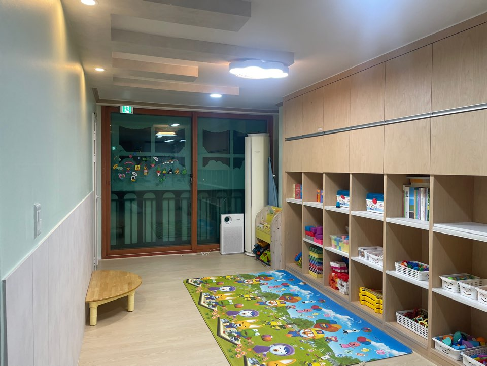

0~2세 영아 케어 전문
아이의 처음을 안정감 있게,
영아기의 하루를 세심하게 돌봅니다
꿈초롱어린이집은 서울 강서구 허준로 234 912동 106호에서 0~2세 영아 중심 보육을 운영합니다. 김종예 원장의 20년 보육 경험을 바탕으로, 아이 한 명 한 명의 발달과 정서적 안정에 집중합니다.
- 평일 07:30~19:30 운영
- 부모부담금 없음 (정부지원)
- 차량운행 없음, 특별활동 없음

핵심 요약
부모가 먼저 확인하는 운영 정보
모집 안내 / 운영 정보
확정된 모집 기준
- 모집대상0~2세 영아 (영아 케어 전문)
- 보육시간평일 07:30~19:30
- 보육료부모부담금 없음 (정부지원)
- 차량운행운행하지 않음
- 특별활동별도 운영 없음
- 주소서울 강서구 허준로 234 912동 106호
운영 방향
영아기 기본생활과 안정적인 애착에 집중합니다
꿈초롱어린이집은 이동 중심 프로그램보다 영아의 일상 리듬과 정서적 안정에 초점을 둡니다. 차량운행과 특별활동을 운영하지 않는 대신, 기본생활 습관, 안전한 실내활동, 따뜻한 상호작용을 중심으로 매일의 보육 품질을 쌓아갑니다.
가정과 어린이집이 같은 기준으로 아이를 바라볼 수 있도록, 상담과 안내 과정에서도 아이의 발달 단계와 생활 패턴을 구체적으로 공유합니다.
원장 소개
김종예 원장, 보육 경력 20년
오랜 현장 경험을 바탕으로 영아기의 발달 특성을 세심하게 살피고, 아이와 보호자 모두가 안심할 수 있는 보육 환경을 운영합니다. 관계 중심의 따뜻한 돌봄과 꾸준한 관찰을 통해 아이의 하루를 안정적으로 지원합니다.
보육 철학
아이의 인격을 존중하고 눈높이에서 함께 성장합니다
어린이집 소개
꿈초롱어린이집은 아이들의 인격을 존중하고, 아이들의 눈높이에서 이해하며 함께 놀이를 즐기는 보육을 지향합니다. 몸과 마음이 건강하고 행복하게 자랄 수 있도록 따뜻한 돌봄과 정서적 안정을 소중하게 생각합니다.
보육 철학
아이들은 놀이를 통해 배우고 성장합니다. 꿈초롱어린이집은 아이가 스스로 탐색하고 표현하며 자라날 수 있도록 관계중심의 보육을 실천하고 있습니다. 아이 한 명 한 명의 개성과 발달을 존중하며, 건강하고 밝게 성장할 수 있도록 돕습니다.
프로그램 특징
표준보육과정을 바탕으로 기본생활, 신체운동, 사회관계, 의사소통, 자연탐구, 예술경험 영역을 균형 있게 경험할 수 있도록 운영하고 있습니다. 특히 영아기의 발달 특성을 고려하여 안정적인 애착 형성과 자율성 증진에 도움이 되는 다양한 활동을 진행합니다.
환경과 안전
꿈초롱어린이집은 시설의 청결과 안전을 수시로 점검하며, 아이들이 안심하고 생활할 수 있는 환경을 유지하기 위해 꾸준히 관리하고 있습니다. 교사들은 아이들의 특성과 발달을 세심하게 살피며, 따뜻하고 책임감 있는 보육을 실천하고 있습니다.
부모와의 소통
가정과 어린이집의 연결은 아이의 성장에 매우 중요합니다. 꿈초롱어린이집은 학부모와의 밀접한 소통을 통해 아이의 생활과 발달을 함께 살피고, 신뢰를 바탕으로 아이의 성장을 함께 지원합니다.
아이가 자라는 주변 환경
주변의 도서관과 다양한 놀이 공간은 아이들에게 좋은 배움의 환경이 됩니다. 책과 친숙해지고 다양한 놀이를 경험할 수 있는 환경 속에서, 아이들은 더 즐겁고 풍부한 하루를 만들어갑니다.
내부 사진 갤러리
대표컷 · 생활공간 · 놀이공간 · 보육환경
현재 운영 공간을 직접 확인할 수 있도록 사진을 분류해 제공합니다.